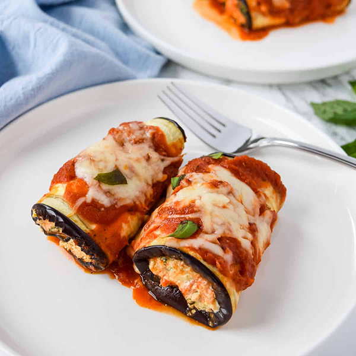

Eggplant Rollatini Recipe
A delicious Sicilian dish with eggplant, ricotta filling and tomato sauce.

Ingredients
- 2 large eggplants
- 5 eggs
- 3 cups seasoned breadcrumbs
- 1/4 cup milk
- 1 lb. ricotta cheese
- 1 cup shredded mozzarella
- 3 cup spinch
- 12 gloves garlic
- 32 oz. crushed tomatos
- Dried Oregeno, Parsley, Aleppo Pepper
- 1 shallot
Directions
- Add the crushed tomatoes to a pot on medium heat with 1 bay leaf, 1 tbsp oregeno, parsley, garlic powder,
crushed aleppo, diced shallot and 1 tsp sugar. Add parmesean cheese rind (optional) Simmer on medium low.
- Thinly slice the eggplants vertically. Lay them on a baking sheet with paper towels and cover in a generous
amount of salt. Let the eggplant slices sweat out the liquid for about 30 minutes.
- While your eggplants are sweating, beat 4 eggs and add 1/4 cup of milk. Add the 3 cups of breadcrumbs and
seasoning to a shallow bowl.
- Heat your frying oil. Bread the eggplant cutlets in the egg base and then cover in breadcrumbs. use your
hands to coat the outside of the cutlet. Fry the eggplants on medium heat until soft and golden brown.
- sautee the spinach with 2 cloves garlic in a small pan
- Prepare the rollatini filling by mixing th ricotta cheese, mozzarella cheese, 1 egg and the sauteed spinach
in a bowl.
- Coat the bottom of your baking dish with 2 tbsp of sauce. Take the eggplant cutlet and place a scoop of
ricotta filling along the middle. roll the cutlet in a spiral and place the opening on the bottom of the
pan.
- Pack the rolls into the baking sheet. Add the remaining sauce on top fo the eggplant rolls and cover the top
with the remaining shredded mozzarella. Bake at 350 for 25 minutes/until cheese is melted.
Cooking Tips and Nutrition Facts
- Sweating the water out of the eggplant makes the taste less bitter. Don't skip this step!
- You can use store bought tomato sauce or make a big batch and freeze some.
- This recipe is just as delicious with unbreaded eggplant. You can also substitute the eggplant for zuccini or yellow squash.
- The filling can be customized with olives, sundried tomatos, pine nuts or pesto.
- You can prepare up to 2 days ahead.